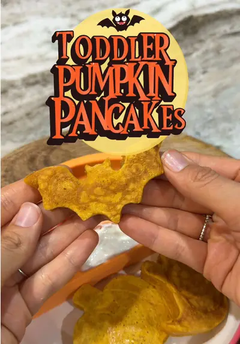

These are the perfect little fall breakfast and SO easy to make

Ingredients
- 1/3 cup pumpkin puree - from @Lidl
- 1 egg
- 1/4 cup whole milk - from @Horizon Organic
- 1/2 cup all-purpose flour - from @lidlus
- 1/2 tsp baking powder - from @Trader Joe's
- Dash of cinnamon
- Olive oil or unsalted butter for cooking
Steps
- Add everything to a bowl and mix until combined.
- Lightly grease your pan and metal Halloween cutters, then place the cutters in the pan and pour in the batter.
- Cook on low-medium heat until set enough to flip, then cook the other side until golden.
- Carefully remove from the molds and let cool before serving!
- Such an easy way to make a regular breakfast feel a little more Halloween-y.
Recipe text as written by @busymamaeasybites on TikTok. Open original